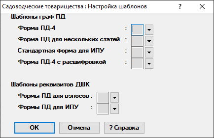
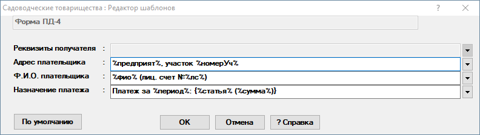
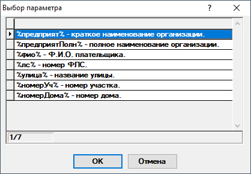

Настройка шаблонов
Данный диалог предназначен для настройки шаблонов граф ПД и реквизитов ДШК(рис. 1).

Рис. 1. Диалог "Настройка шаблонов"Настройка шаблонов ПД доступна для каждой формы ПД. Для граф ДШК настраиваются шаблоны для форм по взносам и для форм по ИПУ в общем.
Диалог редактора шаблонов выглядит как показано на рис. 2. В нём уже имеются заполненные значениями по умолчанию шаблоны.

Рис. 2. Редактор шаблоновВ верхней части диалога отображается название формы ПД, для которой редактируются шаблоны.
Ниже расположены графы, в которых можно редактировать шаблоны. Некоторые графы могут быть заблокированы, т.к. их изменение не предусмотрено формой ПД или реквизитом ДШК.
В левом нижнем углу находится кнопка По умолчанию, которая позволяет установить значения шаблонов по умолчанию.
Выбрав интересующую графу, можно отредактировать шаблон в ней. Все параметры, введенные вручную, не изменяются. Замене при формировании ПД подлежат только параметры между знаками %. Они берутся из специального справочника(рис. 3). Для разных граф справочники могут отличаться набором параметров.

Рис. 3. Справочник параметров шаблонаНеобходимо нажать на  справа
от редактируемой графы, чтобы открыть этот справочник. Далее необходимо
выбрать параметр для подстановки и нажать на ОК.
Параметр будет добавлен в конец шаблона.
справа
от редактируемой графы, чтобы открыть этот справочник. Далее необходимо
выбрать параметр для подстановки и нажать на ОК.
Параметр будет добавлен в конец шаблона.
Для сохранения отредактированных шаблонов необходимо нажать на кнопку ОК. После нажатия на ОК диалог закроется.